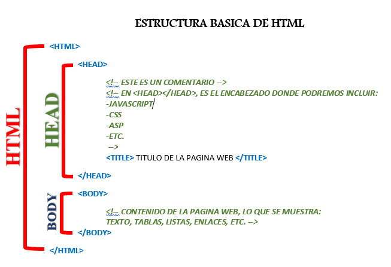

Introducción al HTML
HTML (HyperText Markup Language) es el lenguaje estándar para la creación de documentos web. Es utilizado para estructurar contenido y definir elementos como texto, imágenes, enlaces y más. Desde su creación en 1991, HTML ha evolucionado significativamente, convirtiéndose en el pilar fundamental del desarrollo web moderno.
Estructura Básica de un Documento HTML
Un archivo HTML consta de una estructura básica que incluye los siguientes elementos:
<!DOCTYPE html>
<html>
<head>
<meta charset="UTF-8">
<title>Título de la página</title>
</head>
<body>
<h1>Encabezado principal</h1>
<p>Este es un párrafo de ejemplo.</p>
</body>
</html>

Elementos Fundamentales de HTML
Los elementos en HTML permiten definir diferentes tipos de contenido. Algunos de los más comunes son:
- <h1> a <h6>: Encabezados de distintos niveles para organizar el contenido.
- <p>: Define párrafos de texto.
- <a>: Crea enlaces hacia otras páginas o recursos.
- <img>: Inserta imágenes.
- <ul> y <li>: Genera listas desordenadas.

Aplicaciones Avanzadas
HTML no solo define contenido básico; también permite la integración de tecnologías como CSS y JavaScript para mejorar el diseño y la interactividad. Algunos ejemplos avanzados incluyen:
- Creación de formularios interactivos para recopilar datos del usuario.
- Uso de elementos multimedia como audio y video.
- Implementación de estructuras semánticas para mejorar la accesibilidad y el SEO.
<form action="submit.php" method="POST">
<label for="nombre">Nombre:</label>
<input type="text" id="nombre" name="nombre"><br>
<label for="email">Correo:</label>
<input type="email" id="email" name="email"><br>
<button type="submit">Enviar</button>
</form>

Tendencias Futuras en HTML
HTML sigue evolucionando con cada nueva versión. Las tendencias futuras incluyen una mayor integración con tecnologías como WebAssembly y el soporte mejorado para elementos interactivos como gráficos y animaciones. También se espera un enfoque más fuerte en la accesibilidad y el desarrollo web inclusivo.